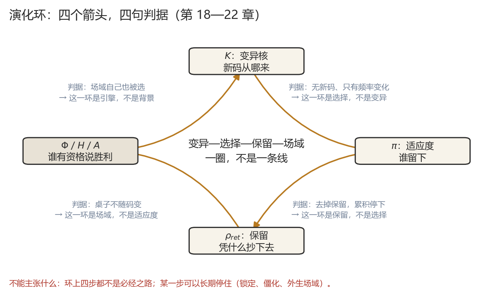
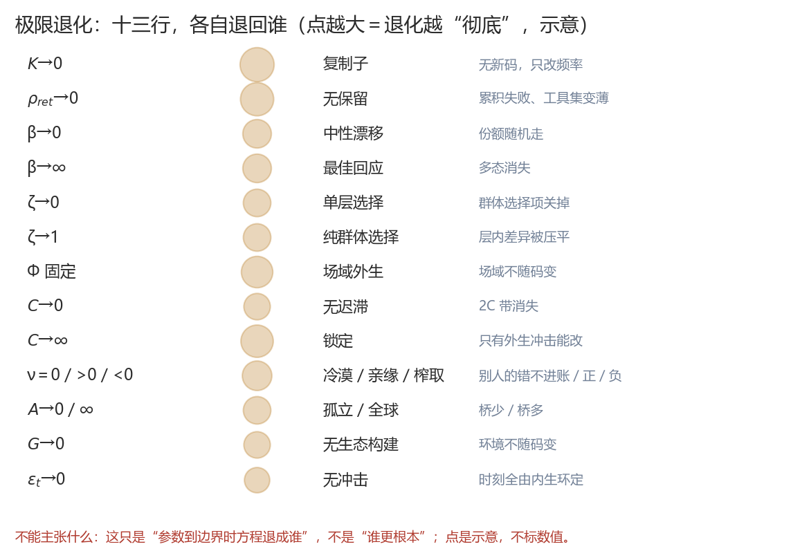
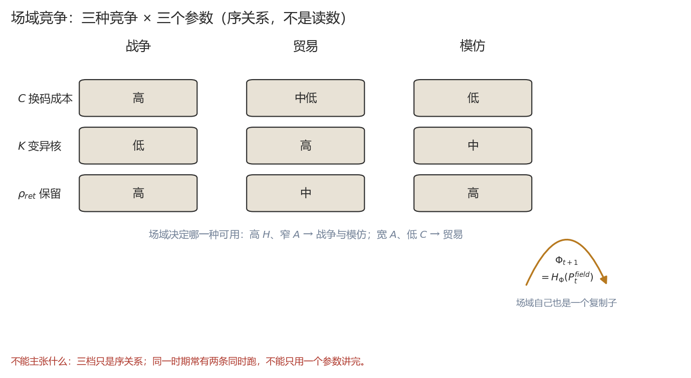

📖 正文阅读页 →
拖动＝旋转 ／ 滚轮＝缩放 ／ 双击＝复位
怎么读
· 螺旋的纵轴是书序：越靠下越靠后；同一圈的章在侧面上彼此引用最多——那是“部内互引”。
· 长斜线是跨部引用：它们集中在几章身上（第 4、5、6、10、20 章），这就是“枢纽”。
· 部×部矩阵的对角线是部内、其余是跨部；跨部只在少数几格，说明七部不是并列的。
· 点的大小＝度（被引＋引用），不是重要性；颜色只有一种，避免七个颜色互抢。
理论地图（3D）· 十条极限，各退回一支既有理论
中心＝本书的模型；五个量各一条刻度（一致性 γ／网络 A／换码 C／外置 ν／预算 R,Δ），
每条刻度上挂两枚极限，每枚末端是一支既有理论。悬停看“接洽点”——哪个量退化成对方的哪个量，
像 c→∞ 退回伽利略变换那样，是等式不是比喻。橙色＝唯一退不回去的一条（ν<0）。
拖动＝旋转 ／ 滚轮＝缩放
图上只标极限条件（如 γ→0）；悬停看“退化到哪支理论＋接洽点”，下表把十条一次列全。
三张判据图
画法不同，读法相同：每张图都带一行“不能主张什么”——可视化不是装饰，是判据的另一种写法。
① 演化环：四个箭头，四句判据

不能主张什么：环上四步都不是必经之路；某一步可以长期停住（锁定、僵化、外生场域）。
② 极限退化矩阵（表 A.4 的图形版）

不能主张什么：点的大小只表示“退化强度”（示意），不标数值；每一行只说明“参数到边界时方程退成谁”，不说明谁更根本。
③ 场域竞争：三种竞争 × 三个参数

不能主张什么：三档只是序关系；同一时期常有两条同时跑，不能只用一个参数讲完；右下角那个环是形式位置，未跑过样本外检验。